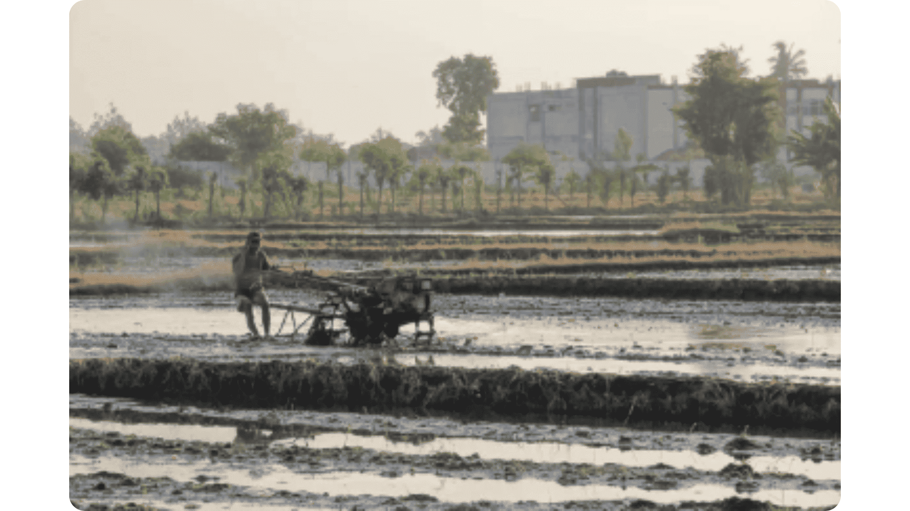

Aksi Penuh (Wide Shot)
Keterangan
Tunjukkan unit alat berat/mesin secara utuh sedang bergerak dan mengolah lahan.
Catatan Operator
Wide shot fokus pada take dari sedikit jauh sehingga memperlihatkan objek sawah secara luas.